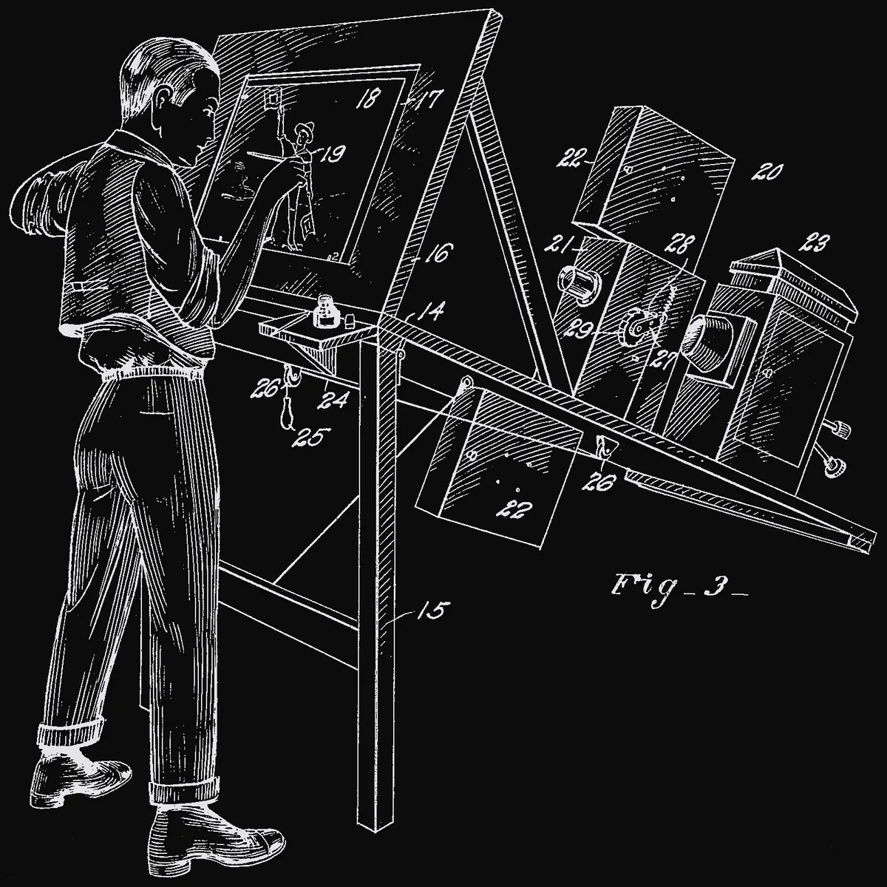
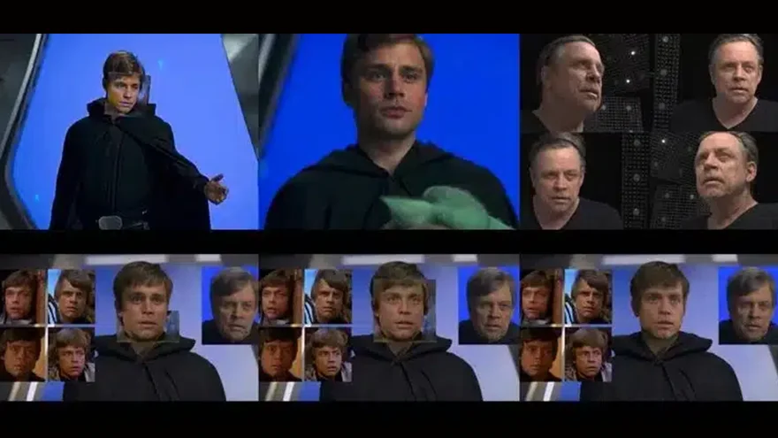

Épisode 1
Introduction
Deux étudiantes et une technologie qui prend de plus en plus de place.
Nous avons choisi de travailler sur l'industrie du cinéma et le paradoxe des nouvelles technologies, notamment avec l'arrivée de l'intelligence artificielle générative. Nous avons choisi ce sujet parce que nous sommes toutes les deux très intéressées par le cinéma. Nous faisons également partie de Ciné-Menton, dont l'une de nous est la présidente. Nous avons donc l'habitude de nous intéresser au monde du cinéma et à ses évolutions. Aujourd'hui, une évolution nous a particulièrement interpellées, la place de plus en plus importante de l'intelligence artificielle dans la création cinématographique.
Scène 1L'IA, d'abord un outil
L'intelligence artificielle est d'abord présentée comme un outil qui peut aider les professionnels du cinéma. Elle permet de réaliser certaines tâches beaucoup plus rapidement. Par exemple, elle peut être utilisée pour la rotoscopie, le tracking, le dérushage, les sous-titres ou le montage, mais aussi pour créer des storyboards, des décors, des effets spéciaux ou certaines voix.

Elle permet donc de gagner du temps et de réduire certains coûts. Elle peut même permettre à de jeunes réalisateurs ou à de petites productions de réaliser des projets qui auraient été beaucoup plus difficiles à produire auparavant. En 2024, le CNC a recensé ces usages à chaque étape de la fabrication d'un film, dans une étude menée avec le cabinet BearingPoint1.
Principaux cas d'usage associés aux étapes d'une œuvre cinématographique ou audiovisuelle
Scène 2L'exemple de The Mandalorian
On peut prendre l'exemple de The Mandalorian, une série produite par Disney dans l'univers de Star Wars. L'intelligence artificielle a notamment été utilisée pour aider les équipes de post-production dans certaines tâches de rotoscopie. Selon la société Numalis, citée par l'école de cinéma ÉSEC, cela aurait permis de réduire jusqu'à 90 % le temps nécessaire à ce travail8. Dans la deuxième saison, l'IA a également été utilisée pour rajeunir le visage de Luke Skywalker, interprété par Mark Hamill, grâce à un deepfake.

Cet exemple montre que l'IA peut réellement être utile aux professionnels et leur permettre de réaliser certaines choses plus rapidement ou plus facilement.
Détourer un personnage image par image pendant trois semaines
Cliquer sur « détourer » et aller prendre un café
Scène 3Notre problématique
Si l'IA peut aider les artistes à créer, elle peut aussi progressivement réaliser certaines tâches qui étaient auparavant faites uniquement par des humains. Elle ne sert donc plus seulement à aider, mais peut aussi commencer à prendre une place dans le processus de création.
Cela pose d'abord une question sur les métiers du cinéma. Si certaines tâches sont automatisées, certains métiers, notamment dans les effets visuels, l'animation ou la post-production, pourraient avoir besoin de moins de personnes. Mais cela pose aussi une question plus artistique. Le cinéma est basé sur l'imagination, les choix et la sensibilité des artistes. Si une partie de plus en plus importante d'un film est créée par une intelligence artificielle, est-ce que l'on perd une partie de ce qui rend une œuvre unique et humaine ?
Il existe également un risque que les productions deviennent plus similaires. Les IA apprennent à partir de contenus qui existent déjà et peuvent donc reproduire des styles, des images ou des tendances déjà présentes. L'utilisation de l'IA pourrait alors pousser les créateurs vers des choix considérés comme plus « sûrs » ou plus susceptibles de fonctionner auprès du public, au lieu de prendre des risques et de proposer quelque chose de vraiment nouveau.
Enfin, cette évolution pose aussi des questions juridiques et éthiques. Un acteur doit-il accepter que son visage ou sa voix soient utilisés et modifiés par une IA ? Quelles œuvres peuvent être utilisées pour entraîner une intelligence artificielle ? Qui possède les droits sur une image ou une œuvre créée avec une IA ? Et comment savoir si un contenu a été créé ou modifié par une intelligence artificielle ? Les deepfakes et le clonage de voix peuvent également être utilisés sans l'accord des personnes concernées.
Fin de l'épisode 1
À suivre · Épisode 2
Question de recherche
Le paradoxe de l'IA, notre question, nos hypothèses et notre méthode.
Épisode suivant